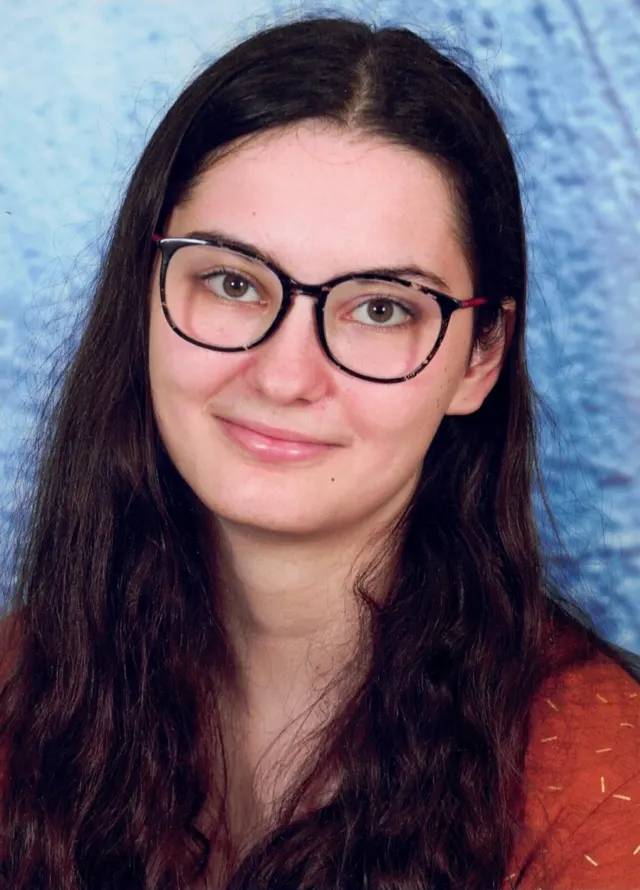

Élève ingénieure à l'ENSIM, en alternance chez SNCF Voyageurs. À la frontière du logiciel et du matériel : systèmes embarqués, réseaux et cybersécurité.
Disponible à partir de sept. 2027
Chaque monde visité, dans l'ordre du voyage.
Premier mouillage : les bases scientifiques avant le grand départ.
Les projets, regroupés en trois systèmes stellaires.
Les systèmes embarqués de la pilote, sur quatre paliers.
Une ingénieure en embarqué, réseaux et cybersécurité, disponible en septembre 2027. Ouvrez un canal.
Journal de bord tenu par Jade Barbier